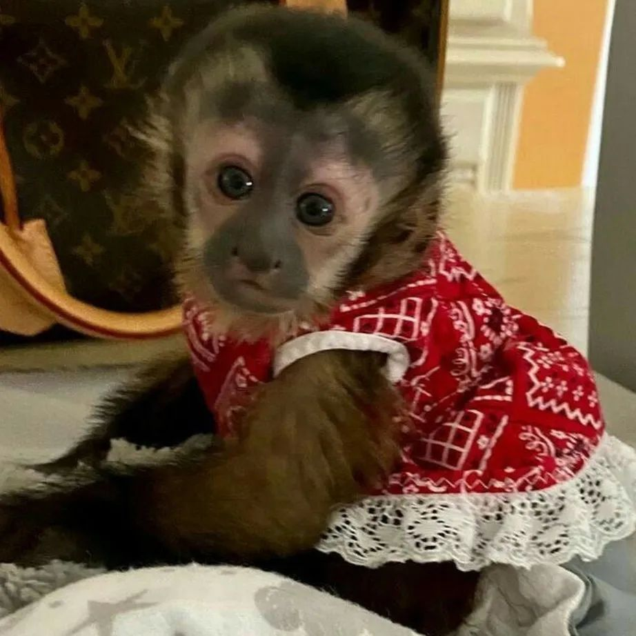
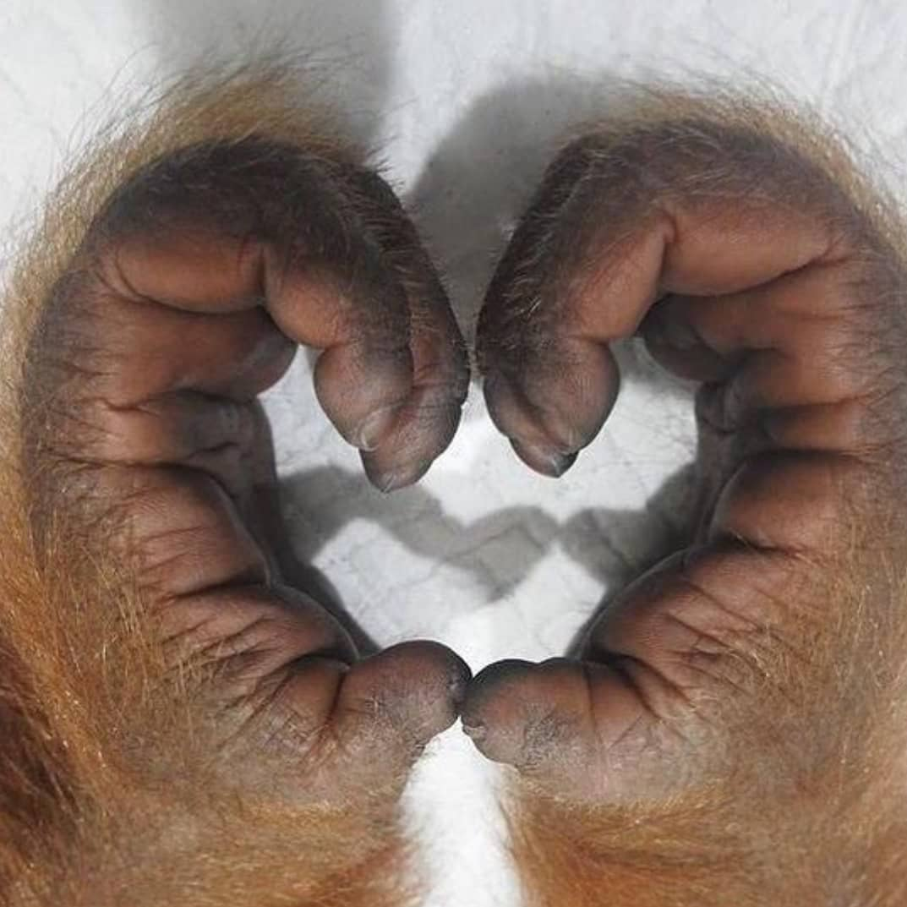
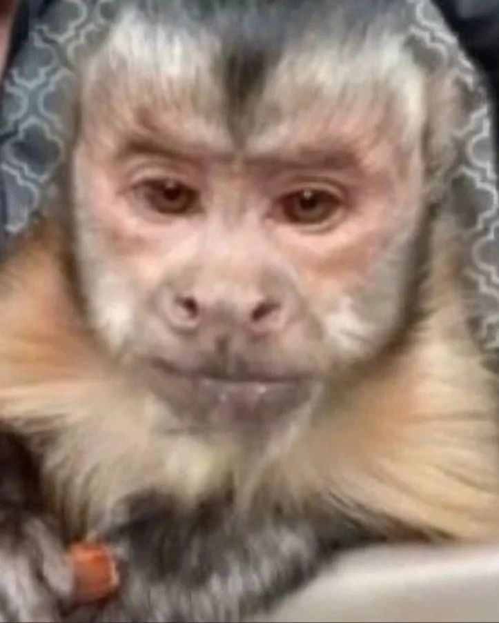

Obs: Roupa errada, pq a outra está lavando
Certo dia, eu o LOVORISMECO encontrei o meu amor.
A simequinha, a moça mais lindona do mundo
EU eu, com toda a minha habilidade comunitiva consegui conquista-la
Falando: eu não sabo conversar!
Desse dia para cá é só lovo e pertubelancia nas nossas vidas
Separei algum de nossos melhores momentos
Está preparada?
